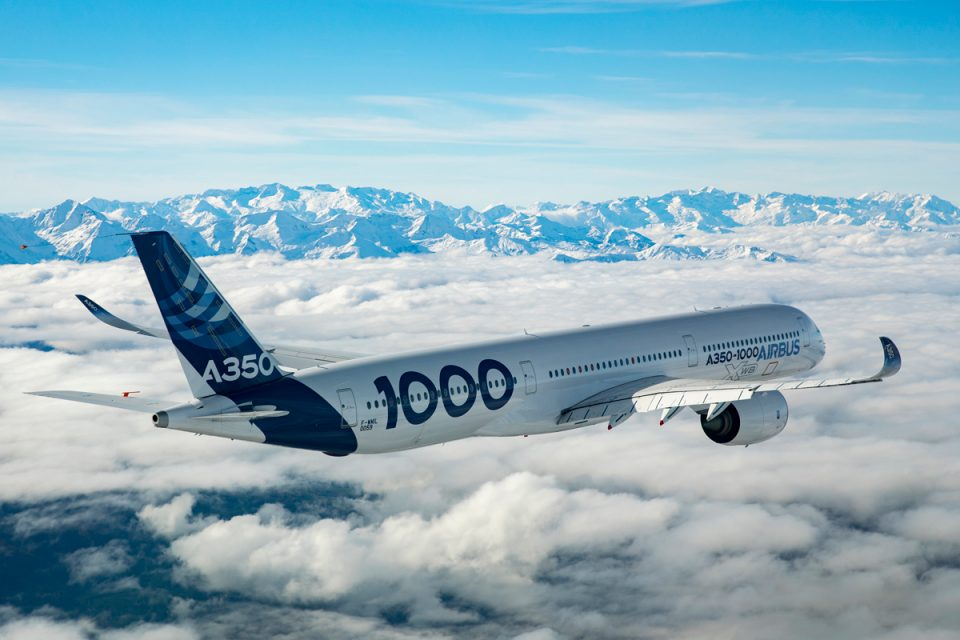
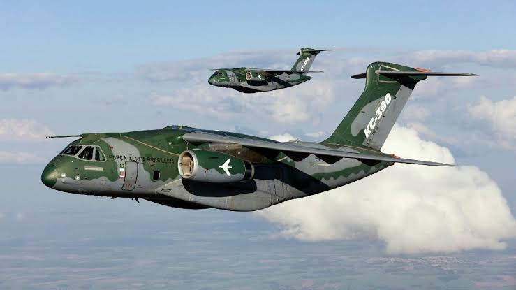
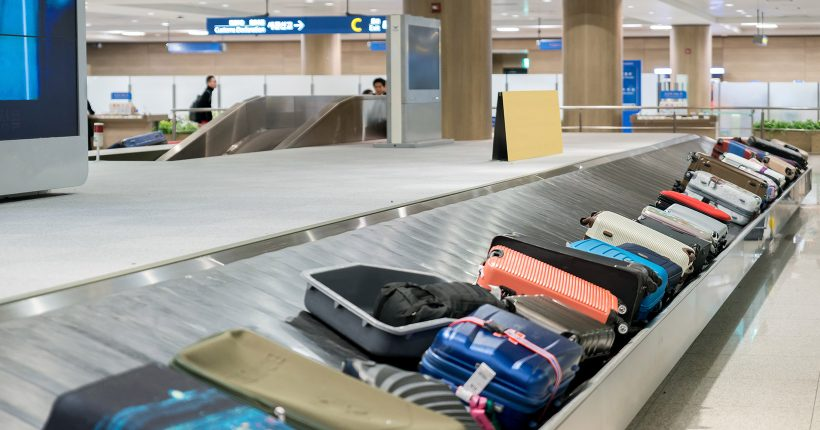
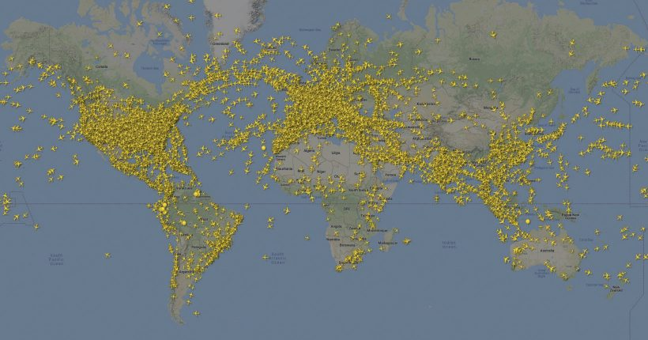

Airbus A350 XWB
Postado em 14 de Junho de 2021 O avião mais moderno: Airbus A350 XWB é uma aeronave widebody bimotor turbofan, desenvolvida e fabricada pela Airbus. O A350 é a primeira aeronave fabricada pela Airbus com fuselagem e asas feitas principalmente com fibra de carbono e polímero. Sua capacidade de passageiros varia de 280 a 366 passageiros.
Embraer C-390 Millennium
Postado em 14 de Junho de 2021 O Embraer C-390 Millennium é um avião para transporte tático/logístico e reabastecimento em voo, desenvolvido e fabricado pela Embraer Defesa e Segurança, subsidiária do grupo brasileiro Embraer. Sua designação de projeto, desenvolvimento e até o início de produção era Embraer KC-390. Em novembro de 2019, recebeu da Embraer a nova designação Embraer C-390 Millennium.
Curiosidades sobre aviões
Postado em 9 de Julho de 2021

1. Bagagens perdidas e não reclamadas são doadas ou leiloadas
Quase 2 milhões de bagagens despachadas em aviões são perdidas todos os anos no mundo. A grande maioria é recuperada. Outras não são encontradas e o passageiro recebe uma indenização da companhia aérea. Mas, uma parte das bagagens não é reclamada, ou não tem proprietário identificado. Nestes casos, no Brasil, as empresas fazem uma doação para instituições beneficentes. Nos Estados Unidos e em alguns países da Europa as malas sem dono são leiloadas. Portanto, se você tinha uma mala que nunca mais viu, provavelmente foi esse o destino dela…
 2. É difícil calcular a duração exata de uma viagem
Existem diversas variáveis que influenciam no tempo de voo, como distância, altitude, tipo de aeronave, clima (especialmente a direção dos ventos) e o tráfego aéreo nos aeroportos de saída e chegada e ao longo do trajeto. Por melhor que seja a previsão, não é incomum acontecerem eventos não esperados. Por isso, as companhias aéreas geralmente utilizam um software para calcular o tempo de viagem, mas sempre adicionam uma margem de segurança para contingências (que pode chegar a 20% do tempo total estimado), evitando assim atrasos em cascata na programação dos voos. Mas nada como uma tempestade inesperada, um passageiro atrasado, ou uma manutenção de última hora na aeronave para fazer com que o voo atrase assim mesmo.
Fonte: Melhores Destinos(Texto com Alterações)
Postagens Recentes
O avião mais moderno: Airbus A350 XWB é uma aeronave widebody...
Leia maisO Embraer C-390 Millennium é um avião para transporte tático/logístico e reabastecimento em voo...
Leia maisEm Breve
Tecnologias usadas em aviões hoje em dia